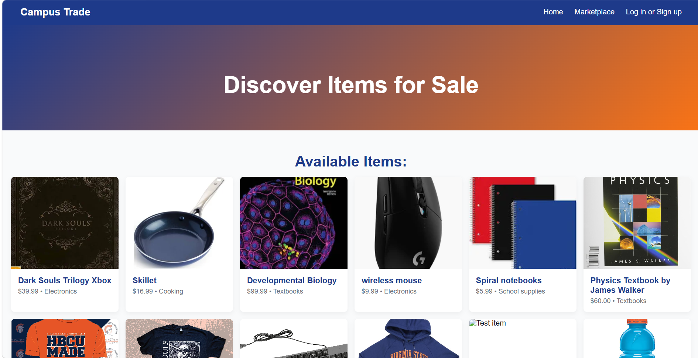

Key Projects & Coursework
Below are some of the projects, assignments, and classes that have shaped my experience as a Computer Science major at Virginia State University.
Twitch Automated Garden
For my senior project, I've been working on an automated garden that controls most aspects of the garden including water and nutrients. It also allows for user interaction to control the different aspects of automation.
School Trading Website
For my database systems class, I created a website for school trading. This involved creating a website similar to Amazon. A database was used to store encrypted usernames and passwords, create, display, and sort item listings, and the ability to add them to a cart and purchase them.

Relevant Coursework
I have taken many classes that increase my coding abilities. Advanced algorithms showed me how to use time complexities to choose the best algorithm for each problem.
In introduction to Artificial Intelligence, I learned how to create and train multiple types of AI algorithms and neural networks, as well as applying existing models to fit a new set of data.
By taking a coding centric statistics class, I was taught how to use R which computes complex statistics and can be called from other coding languages to allow for ease of access of statistics in any coding language.
In other classes, I have learned many different coding languages and learned about many applications of coding including microchips, microcontrollers, databases, machine learning, headless systems, computer networking, and computer security.